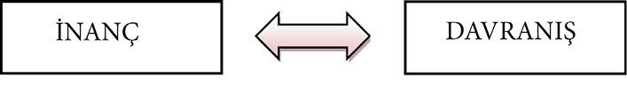

BÖLÜM 5 - İNANMAK
• Yapmayı düşündüğümüz her neyse tereddütsüz inanmalıyız.
• Eski kayıtlara bakarak yeni bir yaşam kuramayız.
• Yaşam seçimlerimiz üzerine ilerler.
• “Başkalarının ne dediğini” fazlasıyla önemseyenler kendi yaşamlarını sürdüremezler.
• Hayallerinize inanmayanlara bunun nasıl olacağını anlatmak yerine, enerjinizi hayallerinizi gerçekleştirmeye harcayın.
İNANMAK
• Yapmayı düşündüğümüz her neyse tereddütsüz inanmalıyız.
“Başarınızın büyüklüğünü, inancınızın büyüklüğü belirler.”
L. Annaeus Seneca (M.Ö.4-M.S.65)
30 yaşında bir firmada sıradan bir çalışandı, onu kimse tanımıyordu ve ortalama bir ekonomiye sahipti…
35 yaşında internetin en büyük alışveriş sitesi haline gelen Amazon.com’un sahibiydi, Time Dergisi tarafından yılın adamı seçildi ve dünyanın sayılı zenginleri arasına girdi.
Jeff Bezos, patronu David Shaw’a sunduğu internette kitap satma fikrini kabul ettiremeyince kendisi yapmaya karar verdi. Gerçekten istiyorsak buna tüm kalbimizle inanıp uğraşmaya değmez mi?
Hayallerine ilk desteği kendisi verdi. Çalıştığı işten ayrılarak evinin garajına kurduğu bilgisayarlarla projesinin ilk adımını attı. Arkadaşlarının da yardımıyla bir yıla yakın uğraşması sonucu 1995 yılında “Dünyanın En Büyük Kitapçısı” sloganıyla web sitesini alışverişe açtı.
Hızla gelişen internetin gücünü fark edip dünyaya yeni bir iş modeli sunan (e-ticaret) Jeff Bezos, kısa sürede, parlak fikrinin ve onun peşinden gitme cesaretinin sayesinde çok çabuk ilerledi.
27 yaşındaki Charles Lindbergh (1927), 26 yaşındaki Kraliçe II. Elizabeth (1952) ve 34 yaşındaki Martin Luther King Jr. (1963)’dan sonra Jeff Bezos, 1999’da 35 yaşında Time Dergisi’ne yılın adamı seçilen en genç dördüncü kişi oldu.
***
Uzun zamandır tek bir yağmur damlası bile düşmemişti köye. Halk endişe içindeydi. Toprağını sulayamayan köylü gelecek seneki hasattan da umudunu kesmek üzereydi. Böyle giderse susuzluğa bir de açlık eklenecekti. Durumun ciddiyeti başta muhtar olmak üzere ihtiyar heyetini de düşündürüyordu. Yağmur duası kararı alındı.
Köy çıkışında toplanan halk duanın ardından ertesi gün buluşmak üzere ayrıldı. Ertesi sabah, yeniden köy dışında toplanan çaresiz halk, tam duaya hazırlanıyordu ki onlara nefes nefese yetişen muhtarın sesiyle irkildiler.
“Siz daha çok yağmur beklersiniz?”
Bu sözlere şaşıran köyün ileri gelenlerinden biri:
“Ne yapalım yağmur duası ediyoruz işte, başka çare mi kaldı ki?” diye çıkıştı.
“Doğru dua ediyorsunuz ama yağmurun yağacağına gerçekten inanmıyorsunuz?” dedi muhtar, sonra elindekini sallayarak, “eğer gerçekten inansaydınız siz de benim gibi şemsiyenizi getirirdiniz.”
İnandığımız şekilde davranmalıyız. Ancak inandığımız gibi davranırsak sonuca ulaşabiliriz. İnanç-davranış ve davranış-inanç arasındaki etkileşim birbirini tamamlayarak hayallerimizin gerçekleşmesini sağlayacaktır.

Düşlerimize inandığımızı öncelikle kendimize göstermeliyiz. Beyin, bir işin olabilirliğinden çok, o konuda emir alıp almadığına bakar. Yürekten inançla bir işe giriştiğinizde beyin artık bunu nasıl gerçekleştirebileceği üzerine planlar yaparak çevreyle bağlantıya geçer.
İşte iki güzel örnek:
6 - 7 kazan, küçük bir fırın ve 3 işçi…
1944 yılında Ülker, Sabri Ülker tarafından, İstanbul Eminönü’nde, ara sokakta bulunan bir handa işte böyle doğdu.
Günde 200 kilo ile başlayan üretim kapasitesi, 1948’de Topkapı’daki fabrikaya taşınılıp 20’şer metrelik 4 fırın alınmasıyla 3 kat arttı. 1955 yılında nakliye ücreti almadan ürün teslim etme kararı satışları olumlu yönde etkiledi.
“Akşama Babacığım Unutma Ülker Getir!” reklam sloganı hâlâ kulaklarda olan Ülker, kaliteyi garanti altına almak için, ihtiyacı olan hammaddeleri kendi fabrikalarında üretme kararı aldı.
Ülker’in kurucusu Sabri Ülker, başlangıç aşamasını şöyle anlatıyor:
“Yola tek bisküvi türüyle çıktık. Zaman içinde çeşitlerimizi artırdık. Çikolata üretimine başladıktan sonra çok daha farklı yönlere ilerleyebildik. Üretimimiz 200 kg’dan yüzlerce tona ulaştı.”
***
Firuz Kanatlı, üniversite eğitimini bitirdikten sonra babası ve amcalarının açtığı bir un fabrikasında çalıştı. Askerlik görevini kantinde yaparken satışların en fazla bisküvi üzerine olduğunu fark eden Firuz Kanatlı, bu alanda kitaplar okumaya başladı.
Askerden döndükten sonraki günleri eşi Gülay Kanatlı şöyle anlatıyor:
“Ben kendi başıma bir iş yapacağım, diyordu. Bisküvi fabrikası kurmaya başlayınca evde denemelere başladık. Benim o zaman bir çocuğum var. Akşamları çocuğumu yediriyorum, yatırıyorum. Kocam tarifleri okuyor, ben hamuru yoğuruyorum. Ardından pişirip tadına bakıyoruz. Halk sevecek mi, diye.”
“Bir bilmecem var çocuklar...” reklamıyla geniş kitlelere ulaşan Eti, bugün Türkiye’nin 200 bin noktasında satışa sunuluyor.
“Büyük işler başarmak için, sadece harekete geçmek yetmez. Ne yapmak istediğinizin rüyasını da görmeniz gerekir; sadece rüyasını görmek yetmez, rüyanın gerçekleşeceğine inanmak da gerekir.”
Anatole France (1844-1924)
Hepimizin hayattan bir takım beklentileri, umutları, istekleri vardır. Bazen bunu bir başkasıyla da paylaşırız. “İşte şöyle hayallerim var ama bunlar benden çok uzak, gerçekleşmeyecek şeyler” dediğinizde, gerçekleşmeyeceğinden emin olabilirsiniz. Belki bunu bizzat dile getirmesek de ses tonumuzla, halimizle, tavrımızla böyle söyleriz. “Tereddüt edenin sözünü keserler” demiş Benjamin Franklin Jones (1824-1903); o halde yapmayı düşündüğümüz her neyse tereddütsüz inanmalıyız.
Eğer başaracağınızdan şüphe duyuyorsanız; başaramayacağınıza kesinlikle inanabilirsiniz. Eğer hayallerinizin gerçekleşmeyeceğine dair sabit bir inancınız varsa; haklı çıkacağınızdan emin olabilirsiniz.
Bu sizi bir kâhin yapmaz, gerçekleşeceğine inanmadığınız bir şeyin var olması sadece tesadüflerle olur. İnanmak kendi içinde bir dinamizm saklar. Bu, hayal ettiğinize ulaşmak için sizi için için yanan bir ateşe çevirir. Yapacağınız her şey o ateşin sıcaklığıyla beslenecektir. Gücü yüreğinizde hissettiğinde hiçbir güçlük karşınızda duramaz. Düşlerinizin gücüne inanın: Bu inanç sizi güçlü kılacaktır.
***
Babası doktor olmasını istiyordu.
Ama o matematikçi olmaya kararlıydı.
O dönemde iki meslek arasında büyük ölçüde gelir farkı olmasına rağmen o kendisini daha çok heyecanlandıran matematiği tercih etti. Dönemin popülaritesi az olan bu mesleğini severek yapan Galileo Galilei (1564-1642), hayallerinin peşinden giderek tarihin popüler isimlerinden biri olmayı başardı.
***
Biz sadece bir derinin içinde 206 kemik ve 600’den fazla kastan oluşan bir bedenden ibaret değiliz. Aynı zamanda 100 milyar sinir hücresinden (nöronlardan) oluşan muhteşem bir beyne de sahibiz. Nasıl bir gücü içimizde sakladığımızı ve kendi potansiyelimizi yeniden değerlendirerek neler yapabileceğimizi tekrar düşünmemiz gerekiyor sanırım.
***
Başkası yapabiliyorsa siz de yapabilirsiniz…
Thomas Edison (1847-1931) ünlü bilim adamı Michael Faraday’ın üç ciltlik eseri “Deneysel Elektrik Araştırmaları”nı okuduktan sonra oldukça etkilenmiş ve “Şu anda yirmi bir yaşındayım. Elli yaşına kadar yaşayabilirim. Onun başardığı kadar şey başarabilir miyim? Yapacak çok işim var ve hayat çok kısa. Acele edeceğim,” demişti. Ekonomik sorunlar çeken bir aileden gelen M. Faraday’ın iyi bir resmi eğitim alamamasına rağmen elde ettiği başarılar; kendisiyle neredeyse aynı kaderi paylaşan Edison’un, başarılı olacağına dair olan inancını güçlendirdi. 84 yıllık yaşamında insanlığa ışık tutan akıl almaz buluşların altına imzasını attı.
“Tam ben de seni arıyordum, iyi ki karşılaştık” dediğiniz bir kişi; “bugüne kadar nasıl da fark etmemişim bunu” dediğiniz bir olay veya bir durum başınıza geldi mi?
Her şey sadece tesadüf mü? İsteğimize olan inancımız büyüdükçe elde ettiğimiz sonuçlar da büyüyecektir. Hazır olduğumuzdan kuşku duymadığımız andan itibaren isteklerimize daha yakın hale geliriz.
• Eski kayıtlara bakarak yeni bir yaşam kuramayız.
Zihnimiz geçmişin kayıtlarını tutar. Ve biz genelde bu kayıtlardan yola çıkarak kendimizi değerlendirir, geleceğimize yön veririz. Geçmişimizde arzu ettiğimiz gibi bir yaşam sürememişsek, büyük bir başarı elde edememişsek veya istediğimiz seviyeye yükselememişsek tüm bunların geleceğimizi yorumlamamızda olumsuz etkisi olur.
Eski kayıtlara bakarak yeni bir yaşam kuramayız, eskisinin bir benzeri olur bu sadece. Bu sebeple düşlerimize öyle inanmalıyız ki hatta onu gerçekleştirmiş hissiyle yüreğimizi öyle doldurmalıyız ki böylece yeni bir yaşam inşa edebilelim. Bu aşamadan sonra zihnimiz bize artık olumlu verileriyle katkı sağlayacaktır.
Bazen bir işe kalkışırken önyargılarımızın bizi kısıtlayan sesini duyarız. Bizi engellemek ister. Geçmiş olumsuz tecrübelerimizi, hayallerimizle bizim aramıza bir duvar gibi koyar; işte bu anda yaklaşım değiştirmenin tam zamanıdır.
Geleceğe, geçmişten öğrendiklerimizle, bugün yeni şeyler katarak ulaşırız. Biz, yaşamın doğal akışı olan geleceğe yürürüz. Sürekli geçmişe yürüyüş, bizim olduğumuz yerde adeta çakılı kalmamıza neden olur. Bu da yaşama sevincimizi öldürür.
Geleceğe yürürken bazen başımızı arkaya çevirip ne yaptığımıza, nereye kadar geldiğimize, yaşadıklarımıza bakarız ama sonra yeniden gözümüzü rüyalarımıza dikeriz. Bu denge bize bir bütünlük içinde yaşamanın keyfini verir.
“Gücünüzün değerini ve becerinizin sırlarını iyi ölçün.”
Horace Mann (1796-1859)
Düşüncelerinizde kendinizi nasıl tanımlarsanız, gerçek hayatta davranışlarınızda o tanımlarla karşılaşırsınız:
Korkak olduğunuzu düşünüyorsanız, bu davranışınıza yansır; sakar olduğunuzu düşünüyorsanız, günlük hayatınızda yaptığınız sakarlıklarla bunu pekiştirirsiniz; şanssız olduğunuza inanmışsanız, hiçbir fırsatın sizi bulamayacağına emin olabilirsiniz. (Bir fırsatla karşılaşsanız da kendinize şanssız olduğunuzu ezberletmişseniz onu bir fırsat olarak değerlendirmezsiniz bile.)
Örnekleri artırmak mümkün ama asıl önemlisi; kendi tanımlarınızın sizi oluşturduğunun farkında olabilmek. Bugüne dek davranışlarımıza bakarak kendimizi tanımlamışsak, hayat formülünü yanlış uyguluyoruz demektir. Nasıl olmayı arzu ediyorsak kendimizi öyle tanımlamalıyız; böylece davranışlarımızda o istediğimiz kişiyi görebiliriz.
Vücudumuzda günde 2 milyar hücre yenilenebiliyorsa, biz düşüncelerimizi değiştirmekte neden bu kadar direnelim?
Sonuç değişmeyecek, değişimi geciktirmenin ne anlamı var?
Eğer olumlu bir değişim arzu ediyorsanız bunu vücudunuzun ahengine uyarak gerçekleştirebilirsiniz. Tüm bedenimiz bir yılda tamamen yenilenebiliyorsa, bu değişime düşüncelerimizi de katabiliriz. Her yıl gerçekleşen vücut yenilenmemizi fark etmiyoruz ama yapacağımız küçük değişikliklerle bir yılın sonunda düşünce yenilenmemizi hayat kalitemizdeki artışa bakarak çok net fark edebiliriz.
• Yaşam seçimlerimiz üzerine ilerler.
Yaşam bir tercih ve onun getirdiği/götürdüğü sonuçlardan ibarettir. Tercih hakkını iyi kullanabilen güzel sonuçlar elde eder. Tabii ilk önce bir tercih hakkının olduğunun farkında olmak gerekir. Tüm yaşadıklarımızın bizim aldığımız kararlarla ortaya çıktığını kabul etmeliyiz önce.
Başarısızlığı kimse sahiplenmek istemez; o bir yakar toptur, bekletmeden başkasına atılır. Başarının mirasçısı ise çoktur; herkes bir pay çıkarır kendine…
Hayatımızda karşımıza çıkan olumsuz sonuçların nedenlerini hep dışarıda arama eğilimimiz vardır. İyi sonuçları hemen kabullenir de kötüler için fazlasıyla bahanemiz hazırdır. Kaybedilen bir savaşta, iflas eden bir şirkette, kötü geçen bir sınavda, işten çıkarılmada, iyi gitmeyen bir aile hayatında, sağlık sorunlarında, parasal güçlüklerde, sosyal çevremizdeki anlaşmazlıklarda, yaşadığımız duygusal çöküşlerimizde elbette dış faktörlerin de rolü vardır. Ancak sadece dış faktörlerin ardına sığınmak çözümden uzak olan bir yoldur.
Çözüm, doğrular ve yanlışlarla; zaferler ve yenilgilerle; kayıplar ve kazançlarla; başarılar ve başarısızlıklarla kendi yaşamının sorumluluğunu alabilmekten geçer. Bahane üretmek yerine tercihlerimizin sorumluluğunu alarak değişimin ve bizi daha mutlu kılacak hayatın ilk adımını atmalıyız.
Seçimlerimizin bizi bir yerlere götürdüğünün farkında olmak kararlarımızdaki titizliğimizi artırır. Kendi tecrübelerimizin ve o yollardan daha önce geçmiş başkalarının tecrübelerinin ışığında ince eleyip sık dokunarak alınan kararlar, yani seçimlerimiz, bizi daha iyi noktalara taşıyacaktır. İşin püf noktası; yaşamın sorumluluğunu alarak kararlar vermek ve sonra da öğrenerek hayat yolunda emin adımlarla yürümektir.
Şu anki yaşantımız önceki tercihlerimizin bir sonucu. Bu kötü gibi görünmemeli; bilakis doğru seçimlerle de daha iyi bir yaşama, istediğimiz gibi bir yaşama, sahip olabileceğimiz gücünü hissettirmeli.
Bugünümüzü temelden etkileyen seçimlerimizden oluşan hayatımızı, bir anda değiştirmemiz pek mümkün olmayabilir. Fakat küçük rötuşlarla rotamızı düzeltmeye başlayabiliriz. Hemen şimdi…
Kavramları yeniden tanımlayalım:
TESADÜF= Tesadüf Erken kalkıp Saatlerce Amacı uğrunda Durmadan Üretilen Fırsatlardır.
•“Başkalarının ne dediğini” fazlasıyla önemseyenler kendi yaşamlarını sürdüremezler.
Orta öğrenimi sırasında sevmeye başladığı fizik dalında eğitimini sürdürmek için üniversiteye baş vuran Max Planck’a (1858-1947) üniversitenin fizik profesörü Hermann Helmholtz “Fizikte artık yapacak fazla bir şey kalmamıştır,” demişti.
“İlerlemeye açık başka bir bilim dalını seçsen daha iyi olur,” tavsiyesinde bulunmuştu.
Ancak Max Planck’ın ilgi duyduğu eğitimi almaktan vazgeçmeye niyeti yoktu; bu sözler ona döneminde “fiziğin başbakanı” diye adlandırılan büyük fizikçi Hermann Helmholtz tarafından söylenmiş olsa bile. Hayallerinin peşinden gitmeye kararlı olan Max Planck, fizikte veya herhangi bir alanda daha yapılabilecek çok şeyin olduğunu ispatlarcasına “Kuantum teorisinin” temellerini atarak bilim dünyasında adından söz ettirdi.
“Başkaları ne der”, “İstediğimi elde edemezsem başarısız gözükürüm” diye endişeleneceğinize; düşleriniz için hiçbir şey yapmadan bu dünyayı terk edeceğinize endişelenin. Yaşamınızı “başkaları ne der” düşüncesi ve endişesiyle kuşatmışsanız açık yüreklilikle söyleyebilirim ki kendi yaşamınızı yaşamıyorsunuz demektir.
***
Aslan bir gün ormanda giderken tavşanı görür ve ona sorar: “Ben kimim?” Tavşan yanıtlar: “Buraların kralısınız efendim...” Daha sonra tilkiye rastlar ve ona sorar: “Ben kimim?” Tilki yanıtlar: “Siz buraların kralısınız efendim...” Aslan gururla yoluna devam eder. Yolda file rastlar ve sorar: “Ben kimim?” Bu soruyu duyan fil onu tutar ve hortumuyla ağaca fırlatır.
Aslan da şaşkın bir ifadeyle şöyle der: “Bilmiyorsan, bilmiyorum de kardeşim ne vuruyorsun...”
“Başkalarının yaptıklarına söylediklerine ve düşündüklerine aldırış etmeyen, sadece iyi bir insan olmak için kendi yaptıklarıyla ilgilenen bir insan ne çok zaman kazanır.”
Marcus Aurelius (121-180)
Başkalarının sizi nasıl gördüğü değil, sizin kendinizi nasıl gördüğünüz önemli. Başkaları sizi sadece görünen yüzünüzle değerlendirir. Ama siz ilerleyebilmek için onların görmedikleriyle, yani düşlerinizle yola çıkacaksınız.
Siz yeni bir şeyler ortaya koydukça, bu diğerlerinin kendilerini sorgulamalarına neden olur. Bu sorgulama, onlarda hiç de iyi duygular uyandırmaz.
Eğer bir adım atarsanız bazıları yerinde saydığından, sizin gerinizde kalacaklardır. Onlar için rahatsız edici bu durum karşısında sizi eleştirecekler ve tekrar yanlarına çekmek isteyeceklerdir. Bu sebeple en kolay ve güvenli yol sizin düşüncelerinize karşı çıkmak ve bunların yapılamayacağını söylemek olur. Böylece kendilerini daha rahat hissederler.
Kulaklarınızı tıkayın ve düşleriniz için bir adım daha atın. Ve bir daha… Yeterince uzaklaştığınızda, ilerlediğinizde çok gariptir aynı kişiler artık sizi desteklemeye başlayacaklardır: “Ben bu çocukta iş var demiştim” sözleri yükselecektir ardınızdan.
Düşlerinize doğru yol alırken sizin yanınızda olan, destekleyenler büyük ruhlardır. Acımasızca eleştirenler ise (olumlu eleştiri hariç) küçük ruhlar olduğuna göre onlara aldırış etmenize gerek de yoktur. Çevrenizi gelişim ve ilerleme odaklı kişilerden kurun. Düşleri olanlar sizi destekledikleri gibi yeni ufuklar da açarlar.
• Hayallerinize inanmayanlara bunun nasıl olacağını anlatmak yerine, enerjinizi hayallerinizi gerçekleştirmeye harcayın.
Telgrafçı olarak çalıştığı dönemde Edison kullandığı telgraf cihazını sürekli olarak geliştirmeye çalışıyor ve birtakım yenilikler katarak daha verimli kullanabilmenin yollarını arıyordu. Daha yirmisine basmamıştı ama dönemin popüler ve gelecek vaat eden mesleğinde adından söz ettirmeye başlamıştı.
Rutin işler sıkıcıydı, icat peşinde koşmaksa onun hayal gücünü tatmin edebilecek tek uğraştı. O da icatlarını en iyi bildiği işe yoğunlaştırdı ve çalıştığı telgraf şirketinin patronuna çift kanallı bir telgraf cihazı geliştirebileceğinden bahsetti. Böylece iki mesaj, iki ayrı yöne, aynı hattan, aynı anda gidebilecek ve mevcut potansiyel bir anda iki katına çıkacaktı.
Bu projeyi işiten patronu genç mucidi azarlayarak:
“Bir budala bile bir hattın aynı anda iki yönlü çalıştırılamayacağını bilir,” dedi.
Başkasının sözünden değil, kendi hayallerinin peşinden giden bu genç adam; ilerleyen yıllarda iki değil, tam dört mesajın aynı hat üzerinden, aynı anda gitmesini sağlayan dört kanallı telgraf cihazını icat etti.
Diğerleri sığ hayal dünyalarında karaya oturmuş olabilir fakat siz kendi engin rüyalarınızda özgürce kulaç atın. Ünlü yazar Aldous Huxley (1894–1963) “Aerodinamik yasalarına göre o tombul ve tüylü arının hiç uçmaması gerekiyordu” diyor, “herhalde bunu ona hiç kimse söylemedi ki uçuyor.”
Planlama yaparken gözlerinizi dört açın,
Önünüze çıkabilecek engellere karşı!
Harekete geçerken kulaklarınızı kapatın,
Sizi yolunuzdan döndürmek isteyenlere karşı!
“Dünyaya gerçek bir dahi geldiğinde onu şu işaretten tanıyabilirsiniz: Tüm ahmaklar ona karşı birleşmişlerdir.” Jonathan Swift (1667-1745)
“Ben seni biliyorum, şartlarını biliyorum, fazla bir şey gelmez elinden,” diyenlere inanmayın.
Onlara “Sen benim düşlerimi daha görmedin ki onu ne denli istediğimi bilmiyorsun ki, onu gerçekleştireceğime olan inancımın farkında değilsin ki,” deyin.
“Düşlerim daha ortaya çıkmadan ben onlara inanıyorum, sen sadece gördüklerinle yetiniyorsan, o senin sorunun,” deyin.
“Sen ortaya çıkana dek inanma zaten, bu benim düşlerim; inancım, onun var olmasını sağlayacaktır” deyin.
“Herkes sadece görünene inansaydı, hiçbir yenilik gerçekleşemezdi,” deyin.
Hatta bir şey söylemeyin ve yüzünüzü hayallerinize dönün ve onu yapın.
Peki, hayallerimizi duyanların, gerçekleşmesi zor hatta imkânsız olduğunu söyleyerek bizi düşlerimizden vazgeçirmeye çalışmalarının altında yatan sebepler neler olabilir?
Hayal güçleri sizin kadar büyük değildir; ne dediğinizi pek algılayamazlar.
Siz ilerlediğinizde onlar geride kalacaktır; bu onlara kendilerini kötü hissettirecektir.
Eğer hayalleriniz bir şekilde onları da ilgilendiriyorsa değişim onları rahatsız edecektir; alışkanlıklar, insana kendisini güvende hissettirir.
“Hayallerinizi aşağı gören insanlardan uzak durun. Küçük insanlar bunu her zaman yapar. Ama gerçekten büyük insanlar, kendinizi de büyük hissettirirler ki, bu da öyle olmanızı sağlar.”
Mark Twain (1835-1910)
Hayalleriniz karşısında olumsuz olanlar çoğu zaman da bunda başarılı olurlar; eğer hayalleri için hayatını adayanlardan değilseniz… Bu sebeple ne olursa olsun, başkalarının olumsuz enerjilerinin, bizi yürüdüğümüz yoldan alıkoymasını önlemek için; hayalleriniz az da olsa vücut buluncaya dek kimseye bahsetmeyin.
Biraz ilerleme gösterdiğinizde, düşlerinizi gerçekleştirdiğinizde herkes; “Evet bu yapılabilir” diyecektir zaten. Hayallerinize inanmayanlara bunun nasıl olacağını anlatmak yerine enerjinizi hayallerinizi gerçekleştirmeye harcayın. Çünkü insanlar gördüklerine daha kolay inanırlar.
Kopernik (1473–1543)’in ileri sürdüğü teorilere yaşadığı dönemin önde gelenleri bakın ne demişlerdi: “Bu budala astronomi bilimini alt üst etme sevdasındadır… Bir yeni yetme astrologa halk kulak versin, olacak iş mi?”
Oysa Kopernik’in teorisi neydi:
1- Gezegenleri taşıyan göksel küreler dünyanın değil, güneşin çevresinde dönmektedir.
2- Dünya merkezde sabit değil, kendi ekseni çevresinde günlük, güneşin çevresinde yıllık dönüşler içindedir.
Galileo gökyüzünde yeni keşifler yapıyor, gelişime açık olmayanlar ise o yıldızların teleskobun içinde olduğunu iddia ediyorlardı. Teleskoptan bakanlar yıllardır onlara öğretilenlerden farklı bir gökyüzü seyrediyorlar; kimileri ise, belki de düşünceleri değişeceği korkusuyla, teleskoptan bakmaya bile yanaşmıyorlardı.
Kopernik’in dünyanın hareketiyle ilgili görüşlerini desteklediği ve savunduğu için Galileo, Engizisyon Mahkemesi tarafından suçlu bulunmuştu. O da çalışmalarına devam edebilmek için önceden hazırlanan şu metni okudu:
“Ben, Floransalı müteveffa (ölmüş) Vincenzo Galilei’nin oğlu, yetmiş yaşındaki Galileo (..…) Güneş’in evrenin merkezinde hareketsiz durduğuna ve Dünya’nın evrenin merkezi olmayıp hareket ettiğine inandığım için, dini inançlara karşı geldiğim şüphesiyle yargılandım.(…..)
“Tüm samimiyetimle ve inançla, yukarıda andığım yanlışları ve sapkınlıkları nefretle lanetler, bunlardan vazgeçtiğime ant içerim. (…..)
“Gelecekte, ne sözlü ne de yazılı olarak, hakkımda benzer bir şüphe uyandırabilecek hiçbir şey söylemeyeceğime ve beyan etmeyeceğime yemin ederim.”
Değişime karşı direnç her dönemde olmuştur. Yaşadığı hayatı sorgulayan, elde ettiği sonuçlarla hayatını şekillendiren, geçmişten aldığı birikimi elekten geçirip doğru kabul ettikleriyle yoluna devam eden, araştırıp yaşamına ve insanlığa yenilikler katanlara önce kocaman bir “DUR” çekilmiştir her zaman.
Aşağılanmış, hakaret edilmiş, yıpratılmaya çalışılmış. O dönemlerde gücü elinde bulunduranlar, ellerindekileri kaybedecekleri endişesiyle gerçeklerin üzerini örtmeye çalışmışlardır. Bilimsel olarak teorilerini ispatlayanları; karalayarak, toplumsal saygınlıklarını azaltarak bu kişilerin düşüncelerini değersiz hale getirme uğraşı vermişlerdir.
Blaise Pascal (1623-1662) yayımladığı açık mektupta olayı şu can alıcı cümlelerle ifade ediyordu: “Dünya’nın hareket ettiğine dair görüşünden dolayı Galileo’yu suçlu ilan eden fermanı Roma’dan boş yere çıkardınız. Dünya’nın olduğu yerde durduğunu ispatlamak için bundan daha fazlası gerekecektir. Dünya’nın döndüğünü kanıtlayan tutarlı gözlemler varsa, dünyadaki tüm insanlar bir araya gelse de Dünya’nın dönüşünü ve hatta kendilerinin de Dünya’yla birlikte dönüşünü engelleyemezler.”
Galileo ölümünden yaklaşık dört yıl önce, başka bir ülkede, Hollanda’da yayımladığı “İki Yeni Bilim” kitabında, bilimsel yeni bulgularını ifade etmekte olağanüstü sıkıntılar yaşamasına rağmen, geleceğe umutla bakan şu notu düştü: “Artık sınırsız ve hayranlık veren sonuçlarla dolu yeni bir düşünceye giden yolun kapısı açıldı; bu yeni düşünce gelecekte başka yaratıcı zihinleri de harekete geçirecektir.”